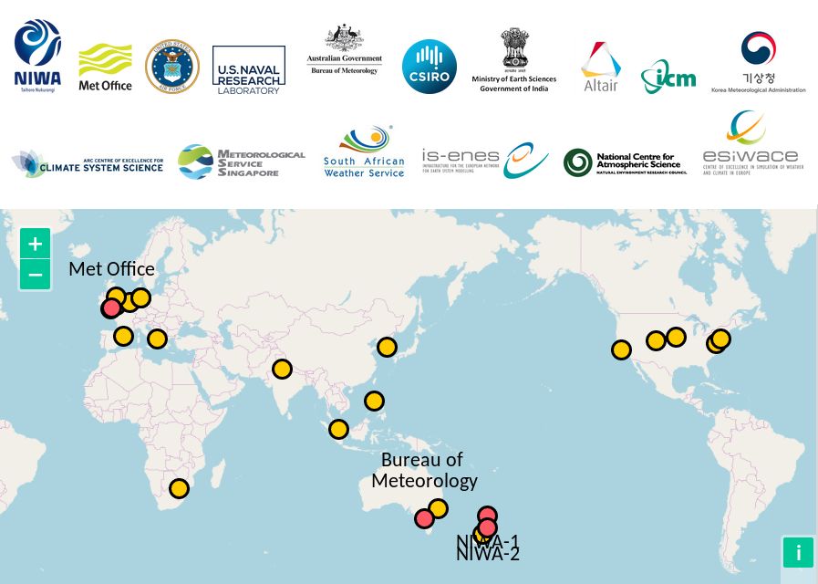
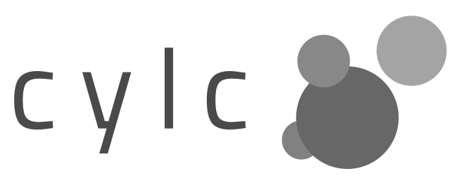
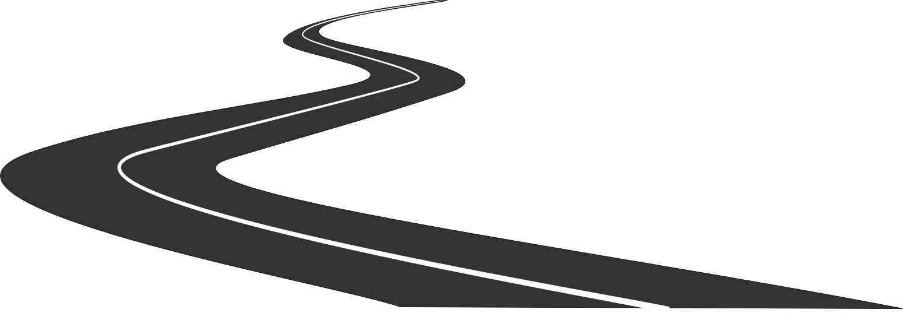
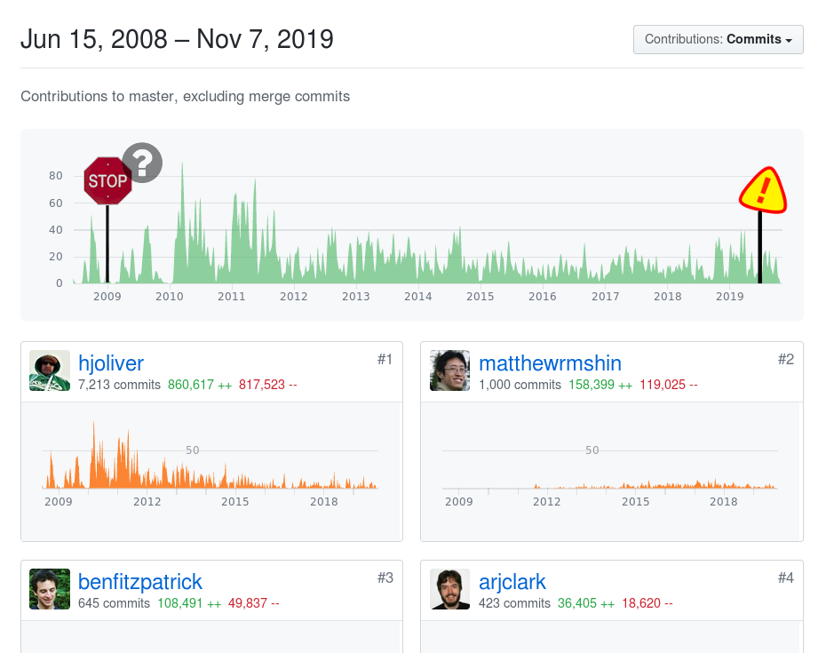

The Cylc Workflow Engine:
Sustaining a Collaborative
Scientific Software Project
Hilary Oliver
NIWA
abstract
Cylc is a workflow orchestration engine for complex cycling systems ... Cylc has precious little to do with fish, so Hilary Oliver (Cylc project lead) will try to focus on general aspects of collaborative scientific software development, and what it takes to successfully grow and sustain a project like this over time.
{kind=link}
{kind=link}
| Arbitrary cycling | |
| Date-time cycling | |
| Simulation mode | |
| External triggering |
|
Live monitoring via GUI or CLI |
|
|
Manual intervention if needed |
|
|
Automatic retry on failed jobs |

Growing & Sustaining
the Cylc Project


| Sustainable development | |
| Sustaining a team | |
| Comms platforms | |
| Development practice | |
| Open development |
Cylc Comms Platforms
| Developer chat and VC | |
| Code management hub | |
| User discussion forum | |
| Website (multi use) |
Development Practice
| Git and GitHub | |
| Issues, PRs, code reviews | |
| Contrib. license agreement | |
| Tests, CI, static analysis | |
| Documentation |
Sustainable Development
| bugs need fixing | |
| new features wanted | |
| ever-better performance | |
| languages (etc.) evolve! | |
| it will NEVER be finished |

Sustaining a Team
| Ideally, need an insane "champion" | |
| Team size and delegation | |
| Retention and spin-up | |
| RSE career path in science? | |
| management without the benefits? |
Cylc development supported by: